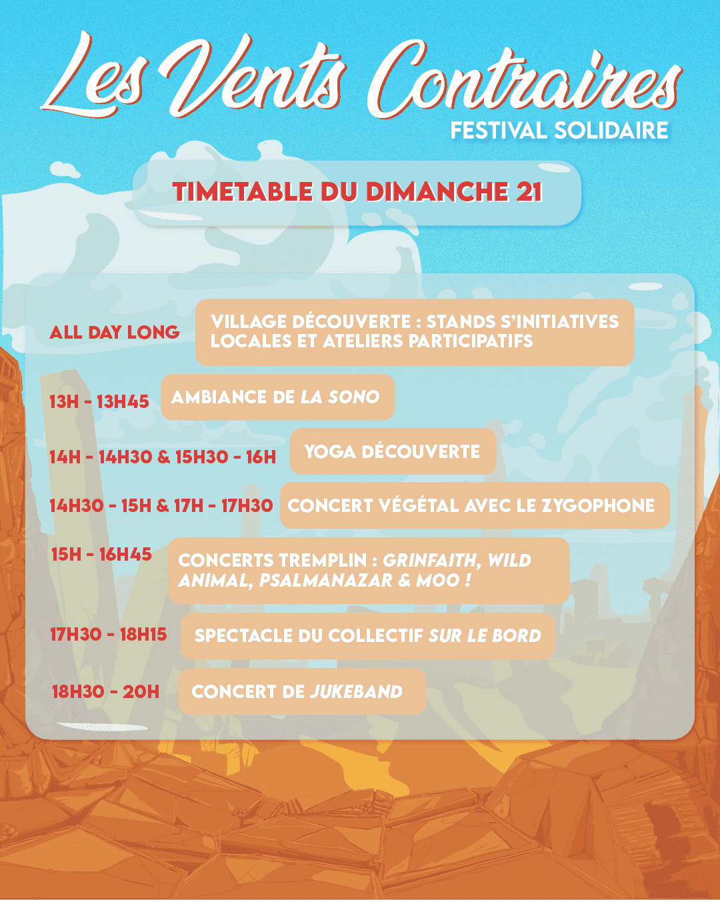
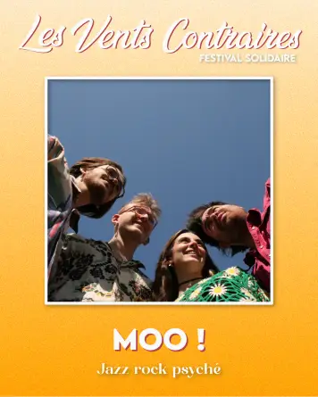
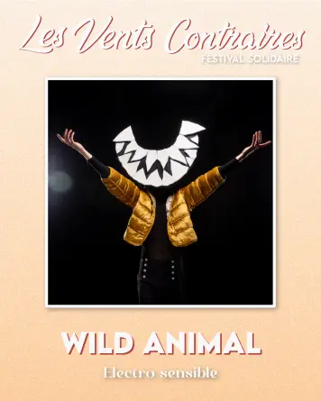
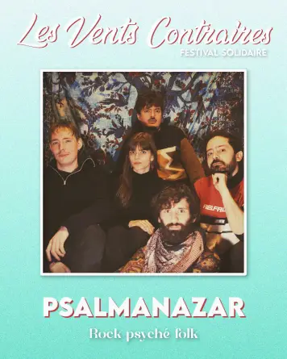

Présentation de la partie
Village associatif

L’objectif du Village est de faire découvrir des associations et structures locales engagées sur trois
thématiques importantes pour le Collectif : l'écologie, les arts vivants et
l’inclusion sous toutes ses formes.
Au programme :
- 🗓️ Le dimanche de 12h00 à 20h00
- 🎫 Entrée à prix libre
- 🎨 Des ateliers sur des thématiques variées
- ✊ Des associations et structures de la région
- 🎶 Un tremplin musical
- 🎭 De l’art de rue et des spectacles vivants
- 🍺 Petite restauration sur place
Le tremplin
Cette année, et pour la première fois,
l'équipe des Vents Contraires a décidé
d'organiser une scène tremplin afin de mettre en avant toujours plus
d'artistes
locaux! 🎶🎵
Suite à l'inscription de pas moins de 25 artistes, 10 ont été
préselectionnés par nos petites mains. Et, grâce à une lutte acharnée sur
les réseaux, seuls 4 auront la chance de se produire en septembre prochain
et de tenter de remporter un créneau pour l'édition 2026 du festival des
Vents Contraires !



